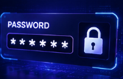

Password adalah garis pertahanan pertama terhadap akses tidak sah ke akun digital Anda. Password yang kuat dan unik dapat mencegah sebagian besar percobaan pencurian akun.
Mengapa Password Kuat Penting?
Banyak pengguna internet masih menggunakan password yang lemah seperti "123456" atau "password". Password lemah dapat dengan mudah ditebak atau di-crack oleh tools otomatis dalam hitungan detik.
Dengan menggunakan password yang kuat, Anda secara signifikan meningkatkan keamanan akun dan data pribadi Anda.
Tahukah Kamu?
Password dengan panjang 12 karakter kombinasi huruf, angka, dan simbol akan memakan waktu jutaan tahun untuk di-crack dengan brute force attack.
Kriteria Password yang Aman
Password yang aman harus memenuhi kriteria berikut ini.
- Minimal 12 karakter panjang (semakin panjang semakin baik).
- Kombinasi huruf besar dan huruf kecil (A-Z dan a-z).
- Minimal satu angka (0-9).
- Minimal satu karakter khusus (!@#$%^&*).
- Tidak mengandung nama pribadi, tanggal lahir, atau informasi yang mudah ditebak.
- Unik untuk setiap akun yang berbeda.
- Tidak menggunakan dictionary words atau kata-kata umum.
Password Lemah
Contoh: "123456", "password", "qwerty" Dapat di-crack dalam hitungan detik.
Password Kuat
Contoh: "Tr0pic@lSunrise#2024!" Kombinasi huruf, angka, dan simbol yang kompleks.
Brute Force Attack
Penyerang mencoba semua kombinasi password hingga menemukan yang benar.
2FA/MFA
Lapisan keamanan tambahan yang membuat akun tetap aman meski password dikompromikan.
Tips Membuat & Menjaga Password
Berikut beberapa tips praktis untuk password yang lebih aman.
Gunakan Passphrase
Gunakan kombinasi kata-kata acak dengan simbol dan angka, lebih mudah diingat namun sulit ditebak.
Jangan Simpan di Tempat Terbuka
Jangan tulis password di kertas atau file tanpa enkripsi. Gunakan password manager terpercaya.
Ganti Password Secara Berkala
Ubah password setiap 3-6 bulan, terutama untuk akun penting seperti email dan perbankan.
Aktifkan Two Factor Authentication
Tambahkan lapisan keamanan dengan 2FA sehingga bahkan jika password dikompromikan, akun tetap aman.
Peringatan
Jangan pernah membagikan password Anda kepada siapa pun, termasuk administrator sistem atau customer service. Organisasi resmi tidak akan pernah meminta password Anda melalui email atau telepon.
Kesimpulan
Password yang kuat adalah investasi penting dalam keamanan digital Anda. Dengan membuat dan memelihara password yang aman, Anda secara signifikan mengurangi risiko akses tidak sah ke akun dan data pribadi Anda.